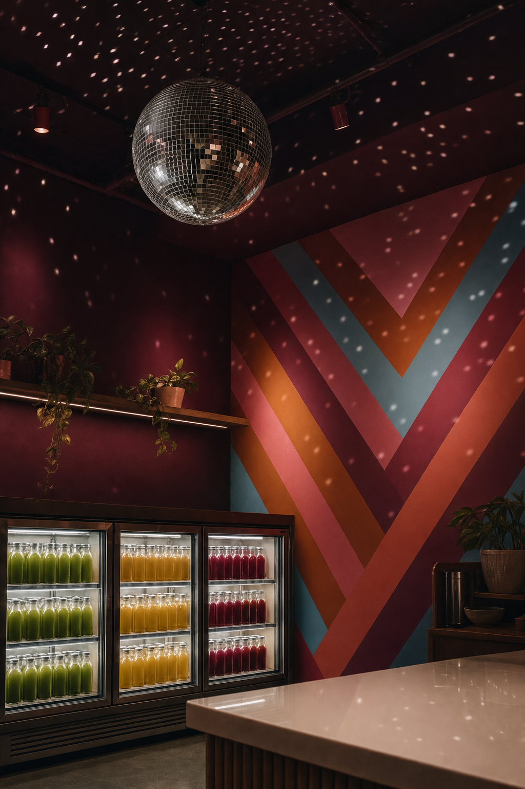
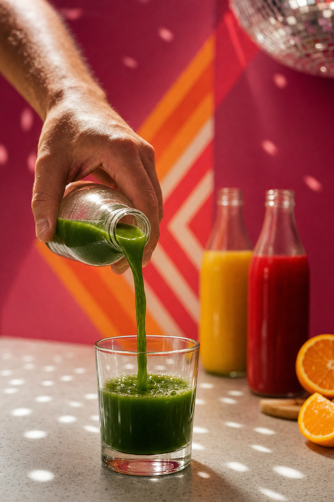

01 · The news
Now open in Uptown.
Hello from Nelson Taylor. I direct and shoot brand content around Dallas–Fort Worth, and Luciana Gomez's CultureMap Dallas piece brought me the news: The Gem has opened a third shop, in Rosewood Court in Uptown. Congratulations to you both, and to the crew behind the new counter.
The details read like a call sheet. A disco ball overhead, color on the walls, upbeat music, a front counter, a grab-and-go case, and tables for one or for a crowd. Your About page even puts disco music in the creed.
The room is already doing the work. My part would be finding where the light lands, and having a camera there when it does.
“We call this new location our ‘Hidden Gem’…”
— Leslie Needleman, to CultureMap Dallas
This page is about letting more people in on it. One day that films the room exactly as you built it, framed for the phone in everyone's pocket.

02 · The idea
Three colors. One ball.
CultureMap names three of your juices up front: Green Glow, Golden Glow and Ruby Slipper. On camera, those are three bold colors before anything else happens. Pour one under a mirror ball and the light does half the directing: flecks crossing the glass, the color moving as it fills, the magenta wall lit up behind it.
That's a format hiding in plain sight. Call it One color a week for now (the name is yours to pick): one counter, one angle, the light under the ball, and a single color stepping forward each week. Once the angle and light are set on the shoot day, every week after slots a new color into the same frame, all quarter long.
Every setup is composed tall from the start, so nothing gets squeezed down to fit a phone later.
- Green
- Gold
- Ruby

03 · Six setups
The parcel.
Six setups across one day in the Uptown shop (before the doors open, through the morning rush, and after hours), laid out like stones on a jeweller's paper. Hands, glass and light only. You choose the day and confirm every setup.
-
Lot 01 · The ball · before openCreative direction — treatment frames, not final footage.
The ball
House lights down, nobody in yet: the mirror ball turning over the empty room, flecks of light crossing the magenta wall and the striped mural. The FX6 holds wide and lets it turn, framed tall.
-
Lot 02 · Green Glow · first lightCreative direction — treatment frames, not final footage.
Green Glow
Your first recipe, poured. One hand, one clear glass, one color filling the frame from the bottom up.
-
Lot 03 · Golden Glow · morningCreative direction — treatment frames, not final footage.
Golden Glow
The same angle and the same light, the second color. This is the setup where the weekly format gets locked.
-
Lot 04 · Ruby Slipper · morningCreative direction — treatment frames, not final footage.
Ruby Slipper
The third color. Then all three side by side on the counter, green, gold and ruby, with the light drifting across them.
-
Lot 05 · The counter · the rushCreative direction — treatment frames, not final footage.
The counter
The morning rush at hand height: a French press, a cold brew, a matcha, a smoothie handed across. Sound on. Any guest in frame is a pair of hands, and releases get sorted together first.
-
Lot 06 · The case · after hoursCreative direction — treatment frames, not final footage.
The case
The grab-and-go case lit, rows of color behind glass, the ball's light moving over the door. Shot once and locked, it can carry a new color every week.
While the FX6 rolls, the A7RV works the same setups for stills, so the site, the app and the grid get photographs in the exact light of the videos.
04 · After hours
The ball, alone.
The day ends with the room on its own. Doors locked, house lights down, the ball turning. A mirror ball throws hundreds of small lights, and in a magenta room every one of them lands somewhere colorful.
Held long on the cinema camera, it becomes the loop that opens and closes everything else: a few seconds of the room you built, with nobody in it but the light.
05 · The day itself
One day, plainly.
That's the whole scope.
- 01One shoot day at the Uptown shopI'm behind the camera the whole day, on a date that works for your counter.
- 02Sony FX6 + Sony A7RVCinema motion on the FX6; stills and hybrid on the A7RV.
- 03Vertical-firstComposed tall from the first frame and delivered 9:16 for Reels, TikTok and Shorts.
- 04An edited set of vertical videos + a stills bankAll from the one shoot day, built to carry a quarter of posting.
- 05Two rounds of editsAbout two weeks from the shoot day to the finished set.
Anything beyond these five lines gets talked through together on a call.
06 · The studio
Who's framing it.
Taylormade Creative is my studio, based in Dallas–Fort Worth, and I'm the one holding the camera. I've spent fourteen years in design and creative direction, and most of my days now go to brand content that I direct, shoot on the FX6 and A7RV, and edit start to finish.
On the content side that includes TONI&GUY Academy, It's a Secret Med Spa and Dreamcatchers Hair. The wider client list runs through Toni & Guy, Lava Cantina, KFC, IAS Academy and Curls, plus one shipped iOS app, Run It UP! Dallas. Nobody hands the footage off between shoot and edit, so what you see planned here is what gets cut.
- 14 yearsin design and direction
- Two camerasFX6 for motion, A7RV for stills
- 9:16from the first setup
- Shoot to editone pair of hands
07 · From here
Whenever Uptown quiets down. A new shop's first weeks are full. This page will keep.
When there's a quiet moment, a twenty-minute call is all it takes to go through the six stones together. Cross out any that don't feel like The Gem, and keep the ones that do.
If the timing isn't right, "not yet" is a completely fine reply, and the congratulations on Uptown stand either way, for you both and the whole crew.
Email NelsonTaylormade Creative · founder and creative director
(817) 707‑1291 · taylormademd@gmail.com
www.taylormadecreative.net · @taylormade_creative